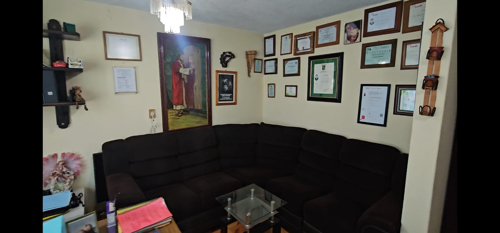
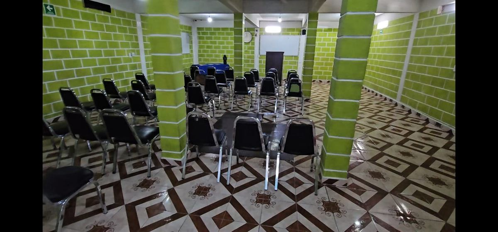
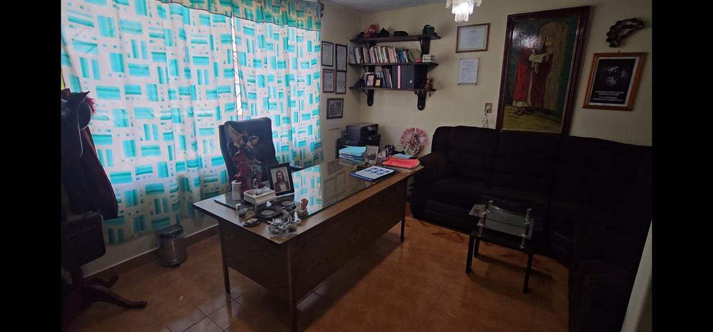
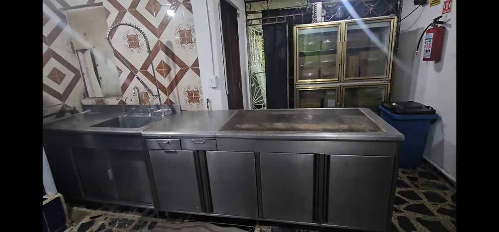
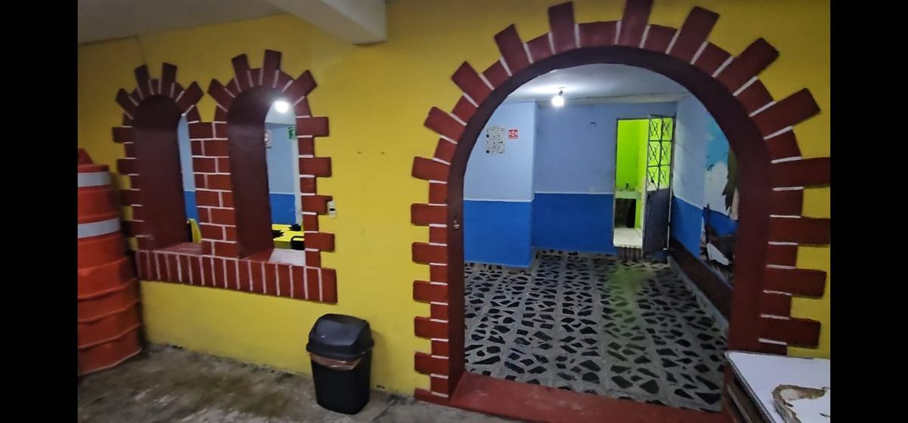
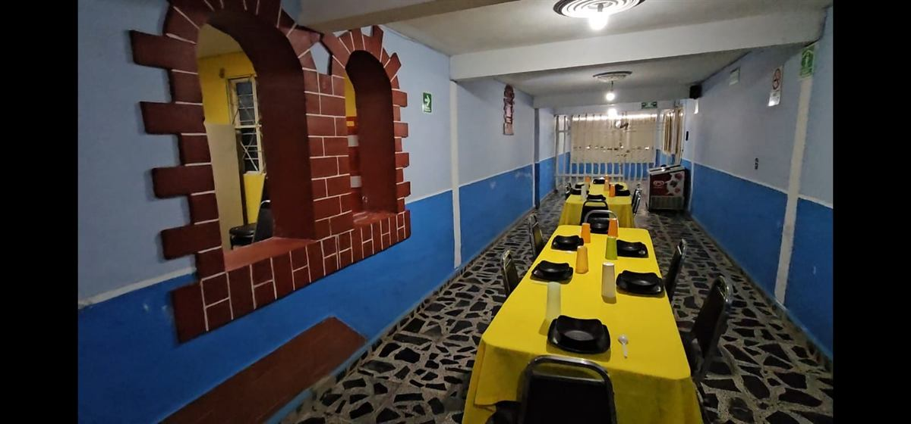
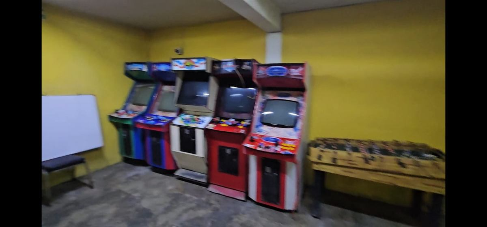

Fuente de Vida Nueva AC Centro de Salud Mental y Adicciones
Hay un camino de regreso a la vida.
Acompañamos a personas y familias en su proceso de recuperación del alcoholismo, las adicciones y otros problemas emocionales, con un tratamiento profesional, humano y espiritual.
La rehabilitación no es solo dejar de consumir… es reconstruir una vida con sentido.
Acompañamos a personas y familias a recuperar el control de su vida, con un modelo que va mucho más allá de la desintoxicación.
20 años de experiencia
Dos décadas respaldando la rehabilitación del alcoholismo, las adicciones y otros problemas emocionales, con un trabajo que se sostiene en el tiempo.
Modelo mixto integral
No fragmentamos el tratamiento: cada paciente avanza en las tres dimensiones que sostienen una recuperación real.
Equipo multidisciplinario
Atención psicológica, valoración psiquiátrica y consejería especializada te acompañan en cada etapa del tratamiento.
Un proyecto de vida real
No solo trabajamos la abstinencia: ayudamos a construir un proyecto de vida con propósito, hábitos y disciplina.
Nuestro compromiso es brindar un espacio seguro, digno, cómodo y de calidad para acompañar a cada paciente en su proceso de rehabilitación y transformación personal.
Un modelo de rehabilitación
mixto e integral
El tratamiento se sostiene en tres bases fundamentales que trabajan de manera conjunta durante todo el proceso de recuperación.
Cuerpo
Desintoxicación, ejercicio, higiene y terapéuticas del bienestar integral para recuperar la salud física.
Mental
Tratamiento psicológico, psicosocial y emocional profesional que acompaña cada etapa del proceso.
Espíritu
Principios espirituales, valores universales, sentido de vida y desarrollo espiritual como sostén del cambio.
Rehabilitación es
reconstruir una vida
Creemos que la verdadera recuperación va mucho más allá de dejar de consumir. Trabajamos en la adquisición y reconstrucción de hábitos saludables, el fomento de la disciplina y el desarrollo de habilidades para la vida, en todas las áreas del paciente.
Hábitos saludables
Acompañamos la adquisición y reconstrucción de hábitos saludables y el fomento de la disciplina personal como base de la recuperación.
Habilidades para la vida
Desarrollamos herramientas prácticas que permiten a cada paciente enfrentar su día a día con autonomía y confianza.
Proyecto de vida
Elaboramos junto al paciente un proyecto de vida personal a corto, mediano y largo plazo, en todas las áreas que la componen.
Un espacio para reconstruir el camino.
Cada etapa del proceso está pensada para acompañar al paciente hacia una vida con propósito, disciplina y sentido.
Método de
recuperación
Un método integral que combina atención clínica profesional con herramientas de transformación personal en cada etapa del tratamiento.
Atención psicológica profesional
Evaluación y terapia a cargo de profesionales especializados en el tratamiento de adicciones.
Valoración psiquiátrica
Seguimiento médico especializado para acompañar el proceso de manera responsable.
Consejería especializada en adicciones
Acompañamiento cercano y experto, enfocado en las particularidades de cada tipo de dependencia.
12 pasos para la recuperación personal
Un programa reconocido a nivel mundial como guía para sostener la recuperación a largo plazo.
Formación en hábitos y disciplina
Herramientas prácticas para reconstruir una rutina de vida saludable y sostenible.
Terapias individuales y grupales
Espacios de trabajo personal y comunitario que fortalecen el proceso de cada paciente.
Superación personal
Un acompañamiento enfocado en el crecimiento y la transformación integral de cada persona.
Un espacio pensado para sanar

Un vistazo a nuestro espacio
Contamos con áreas de atención acondicionadas para acompañar tanto las sesiones terapéuticas como los momentos de convivencia y descanso de cada paciente.
Cada espacio está pensado para sostener el proceso de recuperación con calidez y profesionalismo, día a día.






Un proceso simple y acompañado
Sabemos que dar el primer paso no es fácil. Por eso te acompañamos desde el primer contacto.
Contacto confidencial
Escríbenos por WhatsApp o llama al 55 5838 7066. Escuchamos tu situación y resolvemos tus dudas.
Valoración inicial
Realizamos una evaluación profesional para conocer la situación del paciente y su contexto familiar.
Plan personalizado
Diseñamos un plan de tratamiento basado en nuestro modelo mixto: cuerpo, mente y espíritu.
Acompañamiento continuo
Iniciamos el proceso de rehabilitación con seguimiento constante durante cada etapa.
en rehabilitación
modelo mixto
método de recuperación
Problemáticas que atendemos
Brindamos acompañamiento profesional para quienes enfrentan procesos de dependencia y sus consecuencias emocionales.
Alcoholismo
Acompañamiento integral para superar la dependencia al alcohol y reconstruir hábitos saludables.
Drogadicción y farmacodependencia
Tratamiento profesional para procesos de dependencia a sustancias y su impacto físico y emocional.
Consumo de sustancias psicoactivas
Atención especializada para distintos tipos de consumo problemático, con un enfoque humano y profesional.
Resolvemos tus dudas
Contamos con 20 años de experiencia y un modelo mixto que trabaja el cuerpo, la mente y el espíritu de cada paciente, no solo la abstinencia de sustancias.
Combinamos atención psicológica profesional, valoración psiquiátrica, consejería especializada en adicciones, el programa de 12 pasos, terapias individuales y grupales, y formación en hábitos y disciplina.
Puedes escribirnos por WhatsApp o llamar al 55 5838 7066. Escuchamos tu situación y te orientamos sobre los siguientes pasos.
No. Atendemos alcoholismo, drogadicción y farmacodependencia, así como el consumo de sustancias psicoactivas y otros problemas emocionales asociados.
El proceso de rehabilitación considera el acompañamiento cercano al paciente, con comunicación constante para sostener su recuperación.
Cada proceso es distinto porque cada paciente lo es. Contáctanos por WhatsApp o al 55 5838 7066 y con gusto te compartimos información detallada.
Hablemos, estamos para ayudarte
Escríbenos y con gusto te orientamos sobre nuestro modelo de rehabilitación.
Informes y atención
Dar el primer paso puede cambiarlo todo. Contáctanos con confianza.
-
Teléfono / Informes
-
Experiencia
Dos décadas de trayectoria respaldan cada tratamiento que iniciamos.